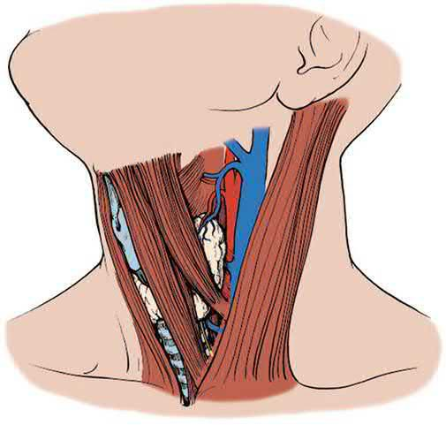
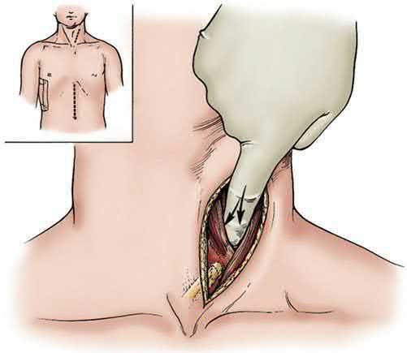

Neck Trauma
Summary
- The neck is divided into three zones because the zone determines the incision, not the diagnosis. Zone I requires a median sternotomy to reach; zones II and III use a lateral neck incision [1].
- The decision to explore is made on symptoms: any symptomatic blunt or penetrating neck injury needs exploration [1].
- This page covers the zones and their approaches, blunt cerebrovascular injury and when to image for it, oesophageal injury (the hardest neck injury to find) laryngeal and tracheal injury, and the vessels that can and cannot be ligated.
Definition
The three zones are defined by bony landmarks [1]:
| Zone | Boundaries | Approach |
|---|---|---|
| I | Clavicle to cricoid cartilage | Median sternotomy needed to reach these lesions |
| II | Cricoid to angle of mandible | Lateral neck incision |
| III | Angle of mandible to base of skull | Lateral neck incision; may need jaw subluxation, digastric and sternocleidomastoid release, or mastoid sinus resection to reach vascular injuries |
The important implication of a zone I injury is the greater potential for intrathoracic great vessel injury [1].
Pathophysiology
The distal internal carotid artery is the commonest site of blunt cerebrovascular injury, which may take the form of dissection, transection, arteriovenous fistula or pseudoaneurysm [1].
An expanding neck haematoma can compromise the airway [1], which is why it appears among the symptoms mandating exploration rather than among the findings to observe.
Clinical features
The symptoms that mandate exploration are shock, bleeding, an expanding haematoma, losing or having lost the airway, subcutaneous air, stridor, dysphagia, haemoptysis, and a neurological deficit [1].
Laryngeal fracture and tracheal injury present with crepitus, stridor and respiratory compromise, and are airway emergencies addressed in the primary survey [1].
Recurrent laryngeal nerve injury presents with hoarseness [1].
Etiology
The indications for imaging in suspected blunt cerebrovascular injury are broad, and the threshold is deliberately low [1]: any significant blunt head or neck injury such as a Le Fort II or III fracture, basilar skull fracture, diffuse axonal injury or cervical spine fracture; any hyperflexion, hyperextension or rotation mechanism such as attempted hanging; a neurological finding not explained by brain imaging; epistaxis from a suspected arterial source; or a GCS below 8 with head injury.
An isolated neck skin seatbelt sign without soft tissue injury is not a risk factor and is not on its own enough to warrant a neck CT angiogram [1].
Diagnosis
Asymptomatic blunt injury gets a neck CT angiogram including assessment of the cervical spine [1].
Asymptomatic penetrating injury gets a neck CT angiogram, plus endoscopy or an oesophagogram for zone I and II injuries, and the chest included in the angiogram for zone I injuries [1].
Oesophageal injury is the hardest neck injury to find, and the best approach is combined: oesophagoscopy with oesophagogram finds essentially 95% of injuries when both are used [1].
Shotgun injuries to the neck need angiography and neck CT, with evaluation of the oesophagus and trachea [1].
Thresholds and severity
Ligation of the common or internal carotid artery causes stroke in 20% [1].
Vertebral artery bleeding (posterior neck arterial bleeding) can be embolised or ligated, with no sequelae in the majority [1]. The external carotid can be ligated for extensive bleeding from facial fractures [1].
All oesophageal and hypopharyngeal repairs are drained, because the leak rate is 20% [1].
Bailey & Love treats the neck and spine together in its trauma section, and the practical UK emphasis is the same as the ABSITE approach above: the zone determines the exposure, and symptoms rather than imaging determine whether to explore [2].
Cricothyroidotomy is the airway of last resort, indicated where usual intubation cannot be accomplished (severe maxillofacial trauma, an airway foreign body, severe laryngospasm) and the patient has impending loss of the airway [1].
A cricothyroidotomy must later be converted to a tracheostomy [1], and tracheostomy is necessary for most laryngeal and tracheal injuries in any case, to allow oedema to subside and to check for stricture [1].
Treatment and Management
Blunt cerebrovascular injury is managed by degree of occlusion and by symptoms [1]:
- Completely occluded carotid, clopidogrel or heparin, to prevent clot propagation.
- Partially occluded and symptomatic, covered stent, with open repair if that fails.
- Partially occluded and asymptomatic, clopidogrel or heparin, with repeat CT angiography before discharge.
- Carotid AV fistula, pseudoaneurysm, or symptomatic partially occluded dissection, covered stent.
- Oesophageal injury is managed by whether it is contained.
- Contained injuries can be observed.
- For non-contained injuries, a small injury with minimal contamination gets primary closure; where the injury is extensive or contamination significant, a neck oesophageal injury is simply drained widely and will heal on its own (the same approach used when the injury cannot be found) while a chest oesophageal injury gets chest tubes and a spit fistula in the neck, and will eventually need oesophagectomy [1].
Laryngeal and tracheal injuries are repaired primarily, with strap muscle available for airway support [1].
Thyroid gland injuries are controlled by suture ligation and drainage, not thyroidectomy [1].
Recurrent laryngeal nerve injury can be repaired, or the nerve reimplanted into the cricoarytenoid muscle [1].
Procedural interventions
The surgical approach to an oesophageal injury depends on its level [1]:
| Level | Approach |
|---|---|
| Neck | Left side |
| Upper half of thoracic oesophagus | Right thoracotomy, avoids the aorta |
| Lower third of thoracic oesophagus | Left thoracotomy, follows its left-sided course |
Zone III vascular injuries may require jaw subluxation, release of digastric and sternocleidomastoid, or mastoid sinus resection to gain access [1].


Complications
The 20% leak rate after oesophageal and hypopharyngeal repair is the reason drainage is mandatory [1].
Carotid ligation carries a 20% stroke rate [1], which is why stenting has displaced it wherever the anatomy allows.
Stricture is the reason a tracheostomy is left in place after airway repair rather than closed early [1].
Outcomes
The two numbers to carry from this page are both 20%: the stroke rate after carotid ligation, and the leak rate after oesophageal repair [1].
The diagnostic figure is 95%, the yield of combined oesophagoscopy and oesophagogram for the injury that is hardest to find [1].
References
- The ABSITE Review, 2022, Ch. 15 Trauma
- Bailey & Love's Short Practice of Surgery, 28th ed., Ch. 30 The neck and spine
- Maingot's Abdominal Operations, 13th ed., Ch. 27